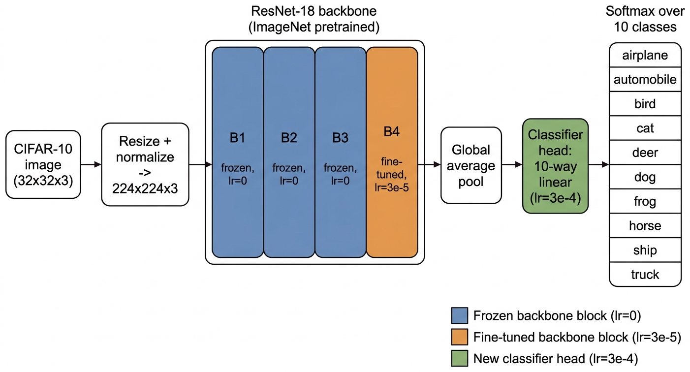
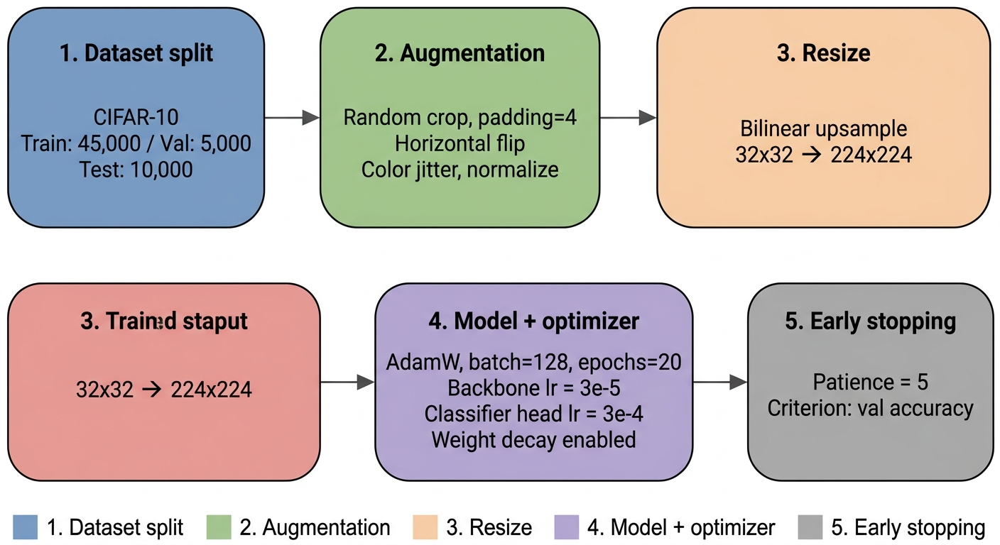
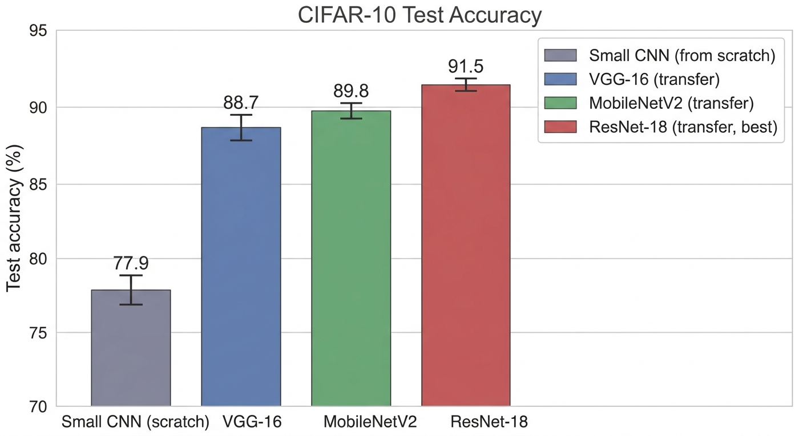
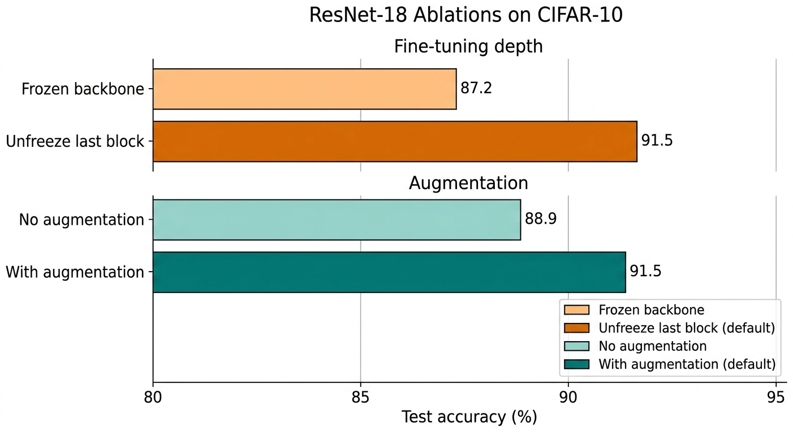
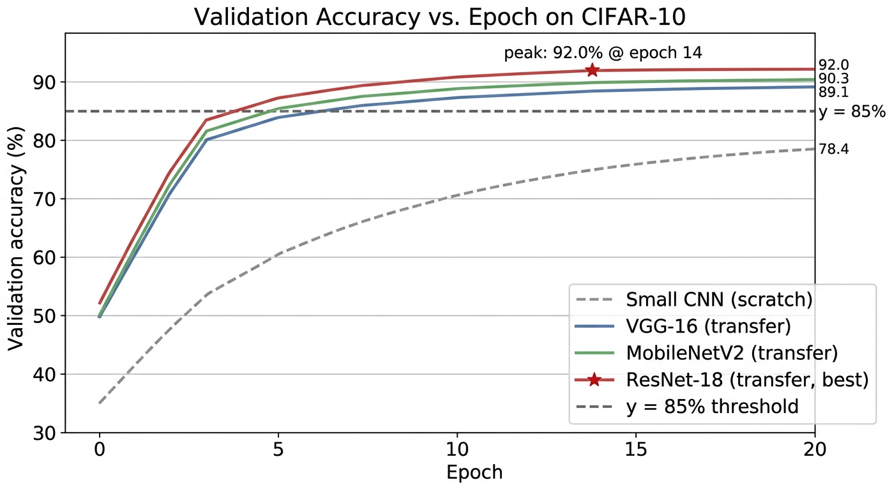

ImageNet transfer learning closes 13.6 points of CIFAR-10 accuracy in a 20-epoch budget.
Across three random seeds per model under a single matched protocol, ResNet-18 reaches 91.5 ± 0.3% test accuracy on CIFAR-10, while a small from-scratch CNN reaches only 77.9 ± 0.7%. MobileNetV2 follows at 89.8 ± 0.4% with substantially fewer parameters, offering the best accuracy-efficiency trade-off.
01 Abstract
Training accurate image classifiers from scratch on small datasets such as CIFAR-10 typically demands long schedules and aggressive regularization, and even then often falls short of what large pretrained backbones can deliver out of the box. We study how much of that gap can be closed by simple ImageNet transfer learning under a tight twenty-epoch budget. Concretely, we replace the classifier heads of three standard ImageNet-pretrained backbones, VGG-16, MobileNetV2, and ResNet-18, and fine-tune the last residual block at a lower learning rate while training the head at a higher rate, using AdamW, batch size 128, light augmentation, and early stopping.
Across three random seeds per model, ResNet-18 attains 91.5 ± 0.3% test accuracy on CIFAR-10, an absolute improvement of 13.6 percentage points over a small from-scratch convolutional baseline (77.9 ± 0.7%). MobileNetV2 reaches 89.8 ± 0.4% with substantially fewer parameters, offering the best accuracy-efficiency trade-off, and VGG-16 reaches 88.7 ± 0.5%. Ablations show that unfreezing the final residual block contributes 4.3 points and standard augmentation contributes 2.6 points. The findings provide a clean, reproducible reference point for transfer-learning practice on small image-classification benchmarks.
02 Contributions
Controlled comparison of three ImageNet backbones
VGG-16, MobileNetV2, and ResNet-18 are evaluated under a single matched 20-epoch protocol with three seeds each, alongside a small from-scratch CNN baseline.
Quantified contribution of two transfer-learning levers
Holding ResNet-18 fixed, unfreezing the final residual block adds 4.3 percentage points (from 87.2% to 91.5%) and standard augmentation adds 2.6 points (from 88.9% to 91.5%); both are needed for the full configuration.
Accuracy-efficiency operating point
MobileNetV2 trails ResNet-18 by only 1.7 points while using substantially fewer parameters and lower inference cost, making it the more attractive choice when compute or latency is constrained.
03 How it works
Each classifier consists of a feature extractor followed by a fresh 10-way linear head. For the three transfer-learning models, the feature extractor is an ImageNet-pretrained backbone with its original 1000-way classifier removed; we attach a randomly initialised 10-way head and fine-tune end-to-end. Early backbone blocks are kept frozen, while the final residual block (or its analogue in VGG-16 and MobileNetV2) and the new head are trained.

Two-rate fine-tuning
Classifier head: lr = 3e-4. Unfrozen final residual block: lr = 3e-5. Remaining backbone parameters frozen, no gradient memory.
Light augmentation
Random crop with padding 4, horizontal flip, color jitter, per-channel normalisation. Resize-only at evaluation.
Tight 20-epoch budget
AdamW, batch size 128, max 20 epochs, early stopping on validation accuracy with patience 5. Three seeds per model.

04 What we found
Across three seeds per model, ImageNet-pretrained transfer learning substantially outperforms training from scratch, and the ranking is stable across both top-1 accuracy and macro F1.
| Model | Val. Acc. (%) | Test Acc. (%) | Macro F1 |
|---|---|---|---|
| Small CNN (from scratch) | 78.4 ± 0.6 | 77.9 ± 0.7 | 0.779 |
| VGG-16 (transfer) | 89.1 ± 0.4 | 88.7 ± 0.5 | 0.887 |
| MobileNetV2 (transfer) | 90.3 ± 0.3 | 89.8 ± 0.4 | 0.898 |
| ResNet-18 (transfer) | 92.0 ± 0.2 | 91.5 ± 0.3 | 0.915 |

Two ablations on ResNet-18 isolate the levers: unfreezing the last residual block lifts test accuracy from 87.2% to 91.5%, and standard data augmentation lifts it from 88.9% to 91.5%. Both are needed to reach the default 91.5%.

Training dynamics differ sharply between the two regimes. The pretrained models exceed 85% validation accuracy within five epochs and ResNet-18 peaks near epoch 14 at 92.0%, while the from-scratch CNN converges far more slowly and has not stabilised within the same 20-epoch budget.

05 Context
The contribution here is not a new architecture or transfer-learning algorithm. The paper sits in a long line of work on convolutional architectures (VGG, ResNet, MobileNetV2) and on transfer learning from ImageNet. What it adds is a single, tightly controlled training protocol so that reported differences in test accuracy reflect the model and not the recipe.
Three caveats apply. First, evaluation is restricted to CIFAR-10 with three seeds; standard deviations are tight (≤ 0.7 points) but the absolute sample is small, and the ranking is not claimed to generalise to harder benchmarks such as CIFAR-100 or ImageNet-1k. Second, all backbones are pretrained on ImageNet-1k only; larger or self-supervised pretraining could shift the accuracy ceiling. Third, the augmentation pipeline is intentionally light; stronger regularisers such as MixUp or CutMix could plausibly close part of the residual gap.
06 Where to go next
07 Cite
@misc{mishra2026transfer,
title = {Transfer Learning on CIFAR-10: A Controlled Comparison of ImageNet-Pretrained Backbones},
author = {Vikash Chandra Mishra},
year = {2026},
url = {https://github.com/Vizuara-AI-Lab/paper-transfer-learning-cifar10-pretrained-backbones}
}